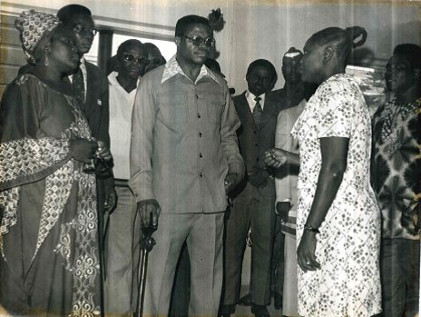

Achievements
Six decades of verified pioneering impact in deaf education, higher-education access, alumni excellence, and national recognition.
Explore Achievements →Verified achievements, campus photography, institutional articles, and calendar announcements from Ibadan School for the Deaf.

Six decades of verified pioneering impact in deaf education, higher-education access, alumni excellence, and national recognition.
Explore Achievements →
Browse 86 modern campus photographs alongside 18 historical anniversary archive photos with filter tabs, progressive loading, and a keyboard-accessible lightbox.
Open Full Gallery →
Read verified institutional essays, parent awareness resources on hearing impairment, and anniversary reflections.
Read News & Articles →
Review documented school celebrations and check for newly announced term events from school management.
View Events →